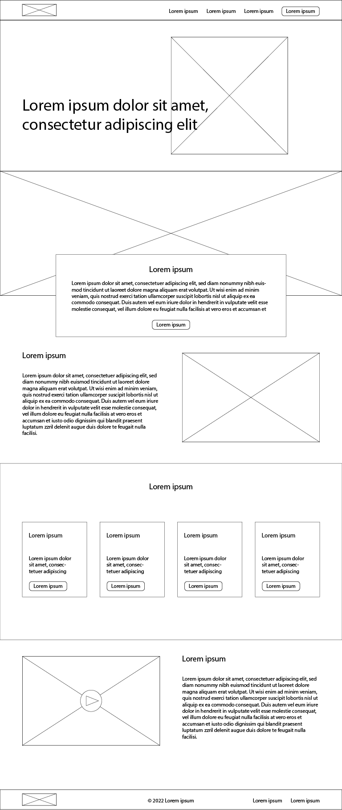

Midterm Project
Now that you have practiced working with atomic design principles, css methodologies, and component libraries, you can now put them all together to being your midterm project deliverable. This project will be a chance to apply what you have learned so far in a real world example. Once completed, it should also make a great case study/portfolio project to showcase your development knowledge.
Instructions
Below you will find a list of technical requirements as well as a low fidelity wireframe. It is your assignment to do the following:
- Analyze the included wireframe and break it down into reasonable, repeatable atomic design components. Feel encouraged to collaborate with classmates or ask me for help before proceeding.
- As needed, create new components in basic HTML/CSS and add to your existing component library/style guide. At this stage, this should be done without being organized to match the wireframe.
- Color palette, typefaces, and other design decisions should match the customizations you made in the last step of the project. If you wish, you can modify or change these design desissions as you go. In the end, you should have one cohesive design system.
- With your design system and component library completed, duplicate and arrange components as necessary to create the layout from the wireframe.
- As necessary, make layout specific overrides for any components that don't quite fit as expected in this layout. If you discover a significant layout issue, go back and modify the original component and styles.
- This work should be placed in your existing repository. At stages when review is necessary, share your link with me to the appropriate discussion when prompted.
Technical Requirements
Development projects usually begin by defining technical requirements with the client. A technical requirements documents outlines the functionality and features of a digital product. While the level of detail in this document can vary, it usually includes information on tech stacks, third party integrations, and any regulatory compliance the project requires. Please find your technical requirements below:
- Ensure use of semantic HTML markup. Markup should be organized following the atomic design system.
- Select a css methodology of your choice and ensure project styles follow this method.
- All fonts should be loaded from a service such as google fonts.
- All assets (css, javscript/jquery, images) should be organized within sub-folders.
- Avoid inline style declaration as well as style and script tags as much as possible.
- Use css flexbox or grid to construct your layouts.
- Please make sure to follow current standards for web accessibility.
- Ensure designs follow 508/WCAG color contrast compliance.
- Confirm that styles are uniform across all current major browsers: Chrome, Firefox, Safari, Edge.
- Please maintain a readme file for your project. This should specify css methodology used, as well as any other design or development tools.
Wireframe
Please use this wireframe as a structural reference.
You may receive additional technical requirements or design requests as the semester goes on. Those will all be applied to this project. THis project will ultimately be due and graded at midterms.